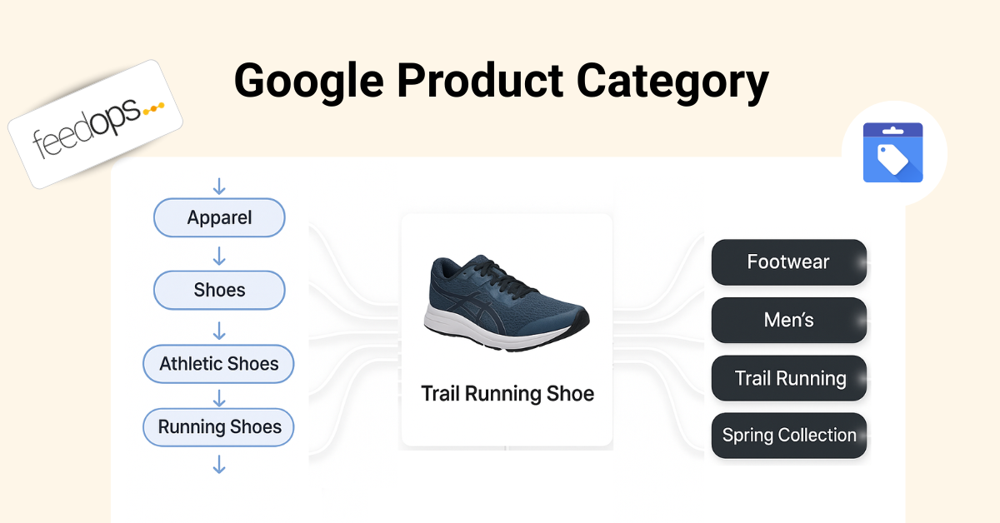

Google-defined
The values come from Google's taxonomy. You can submit a numeric category ID or a full category path.
Google Product Category

Last updated:
Google Product Category is Google's predefined taxonomy for Shopping product data, and Google normally auto-assigns it. The important job is to check whether the category is accurate. If it is wrong, fix the product data first, then resubmit the feed so Google can recalculate before you force an override.
The short version
Google Product Category is the category Google uses to understand what kind of product you sell inside Merchant Center. Google usually assigns this automatically using its own product taxonomy. There is usually no reason to reset it manually if Google has classified the product correctly. The smart workflow is to check it, improve the product data if it is wrong, and only override it when the automatic category still does not make sense.
google_product_category only when the automatic category remains wrong or creates a category-specific issue.
The values come from Google's taxonomy. You can submit a numeric category ID or a full category path.
Google can assign product categories automatically from your product data, website, and other product signals.
Submit the single Google category that best describes the product's main function, not every possible use case.
Definition
Google Product Category is the Google-assigned category for a product in Merchant Center. It connects your product to a predefined category in Google's product taxonomy. In Google's Google product category documentation, Google explains that it automatically assigns a category to products, but merchants can use the google_product_category attribute to override the automatic category in specific cases.
Think of it as the official Google shelf for the product. If you sell a dress, a mobile phone, a gift card, a software subscription, or a bottle of wine, Google wants to understand the product's category because category can affect classification, product data requirements, policy checks, campaign structure, and how the product is handled across Shopping surfaces.
This is different from your website navigation and different from product type. Your site might call a category "New Season Essentials" or "Festival Edits", but Google Product Category needs to map the product to Google's taxonomy. Google Shopping product type is where your own category path belongs. Google Product Category is where Google's official classification belongs.
Commercial impact
Google Product Category matters because classification errors can create real commercial friction. If Google thinks a product belongs in the wrong category, Merchant Center may ask for the wrong attributes, apply the wrong policy expectations, or create Google Merchant Center errors that slow down Shopping performance.
Google's product data specification makes the wider point clearly: product data is what Google uses to match products to the right queries, and incorrect or incomplete data can lead to limited eligibility, disapprovals, or poor product display. Google Product Category is one part of that wider product data quality system.
The attribute is not a magic ranking lever or a place to stuff keywords. Its value is accuracy. A correct auto-assigned category can help prevent bad Merchant Center signals, keep category-sensitive products compliant, and give Google a cleaner understanding of what the product is. That can protect performance by removing avoidable classification problems.
When Google's category is wrong, the first fix is usually not to reset the category manually. The better fix is to improve the signals Google uses to classify the product: product type, title, description, GTIN, brand, product page content, structured data, images, and other feed attributes. The Google Shopping Feed Optimization Guide covers that wider cleanup process. Then resubmit the feed and let Google recalculate the category.
For advertisers, it can also support campaign organisation. Google notes that in some countries, including Australia, the United States, and the United Kingdom, Google product category can be used to organise product groups in Shopping ads campaigns. That makes category accuracy useful for both feed quality and campaign structure.
Category vs type
Google Product Category and Product Type are both classification fields, but they do different jobs. Google Product Category is Google's taxonomy. Product Type is your taxonomy. If you treat them as the same thing, the feed can become harder to manage because one field is trying to serve two masters.
| Attribute | Who controls it? | Main purpose |
|---|---|---|
google_product_category |
Google taxonomy | Helps classify the product against Google's predefined category system. |
product_type |
Merchant-defined | Helps organise the feed around your website categories, campaigns, reporting, and merchandising logic. |
The practical rule is simple: let Google Product Category remain Google's official taxonomy bucket, usually auto-assigned. Use Product Type Google Shopping to build your own deeper product hierarchy for campaign segmentation, reporting, and long-tail product meaning.
For example, Google Product Category might classify a product as Apparel & Accessories > Clothing > Dresses. Product Type can go deeper in your own language, such as Clothing > Women > Dresses > Maxi Dresses > Floral Maxi Dresses. One helps Google classification. The other helps your feed and ad account understand the product in your business context.
When to use it
For many products, you should let Google classify them automatically. Google's documentation says it automatically assigns a product category from its continuously evolving taxonomy. That means the normal task is not to reset the category. The normal task is to check whether Google's category is accurate.
If the auto-assigned category is wrong, start by fixing product data. Improve the product type, use Google Shopping title optimization to clarify the title, strengthen the description, check identifiers, improve product page consistency, and resubmit the feed. In many cases, Google should recalculate the category from the stronger product data.
The strongest reason to submit google_product_category is correction after the data has been cleaned up. If Google's automatic category is still wrong, the override can tell Google which category is more accurate. This is especially important when the wrong category creates a Merchant Center issue or causes category-specific attribute rules to apply incorrectly.
Formatting
If you do need to override the auto-assigned category, Google accepts either the predefined numeric category ID or the full category path for google_product_category. Do not submit both in the same value. Google also says the attribute is not repeated, which means each product should have one Google product category.
The cleanest operational approach is to store the numeric category ID where possible, then keep a human-readable label in your feed management notes or mapping rules. Numeric IDs are more stable across language and taxonomy label changes, while category paths are easier for humans to inspect during audits.
product_type for merchant-defined categories.Examples
A stronger Google Product Category is specific, valid, and aligned with the product's main function. The goal is not to create a long keyword path. The goal is to choose the correct place in Google's taxonomy.
| Weak or risky category | Stronger Google category direction |
|---|---|
| Apparel & Accessories | Apparel & Accessories > Clothing > Dresses |
| Electronics | Electronics > Communications > Telephony > Mobile Phones |
| Food, Beverages & Tobacco | Food, Beverages & Tobacco > Beverages > Alcoholic Beverages |
| Software | Software > Computer Software > Antivirus & Security Software |
These examples are deliberately different from Product Type examples. Google Product Category should follow Google's official category tree. Product Type can be deeper and more business-specific, such as Electronics > Mobile Accessories > Phone Cases > iPhone Cases > MagSafe iPhone Cases.
Campaign use
Google Product Category can be useful for campaign structure when your team wants to organise Shopping products around Google's taxonomy. This is different from product type segmentation. Product type usually follows your own website categories, while Google Product Category follows the category structure Google recognises and usually assigns automatically.
That can be helpful when campaign teams need a common classification language across markets, vendors, feeds, or product sources. If multiple stores use different website categories but all submit accurate Google Product Categories, the ad account can still roll up performance using a shared category framework.
Common mistakes
Most Google Product Category problems come from misunderstanding the job of the field. It is not your website category, not a keyword field, and not a place to force products into the category you wish they belonged to. It should describe the product's main function using Google's taxonomy.
product_type, not google_product_category.Optimisation
Start by checking what Google has already assigned. If Google is classifying most products correctly, leave the category alone. The bigger opportunity is usually stronger titles, better product types, clearer descriptions, missing identifiers, image quality, product page consistency, or price and availability accuracy.
If Google has assigned the wrong category, fix the product data first. Optimise the product type, title, description, GTIN, brand, and product page signals, then resubmit the feed. Google should have a better chance of recalculating the right product category from the cleaner data.
Then separate the classification layers. Use Google Product Category for Google's taxonomy, Product Type for your own category depth, and custom labels for campaign strategy. That separation keeps the feed cleaner because each attribute has a clear purpose.
product_type instead of forcing it into Google Product Category.FeedOps approach
The FeedOps approach is to allow Google to automatically assign Google Product Category by default. Start with a feed audit to see what Google has assigned, whether those categories are accurate, and whether any category issues are actually affecting Merchant Center or Shopping campaign structure.
If Google's category is wrong, the first move is still to improve the product data that helps Google classify the product: product type, titles, descriptions, identifiers, and product page consistency. After the feed is resubmitted, Google can recalculate the category from cleaner signals.
If a manual correction is genuinely needed, FeedOps can force or reassign your own Google Product Categories through feed rules or manual edits. That keeps overrides deliberate and controlled, instead of turning Google Product Category into another messy merchant-defined field.
Checklist
google_product_category only when a wrong Google taxonomy classification still needs correction.product_type for your own website category hierarchy and deeper product meaning.FAQ
Google Product Category is Google's predefined product taxonomy for Merchant Center. Google normally auto-assigns it from product data. Merchants should check whether the category is accurate, improve the product data when it is not, and only use the google_product_category attribute as an override when a manual correction is needed.
For most products, Google automatically assigns a product category. The attribute is most useful when Google's automatic classification remains wrong after you have improved product titles, descriptions, product_type values, identifiers, and other product data signals.
Usually, no. First check whether Google's auto-assigned category is accurate. If it is wrong, improve the underlying product data, including product types, titles, descriptions, and identifiers, then resubmit the feed so Google can recalculate the category.
Use an override only when the category remains inaccurate or creates a category-specific Merchant Center issue.
Google product category uses Google's predefined taxonomy. Product_type uses the merchant's own category structure. Google product category is for Google's classification system, while product_type is usually better for your own campaign segmentation, website category logic, reporting, and long-tail product meaning.
Google accepts either the predefined numeric category ID or the full category path, but not both for the same value. Numeric IDs are usually more stable across languages and taxonomy label changes, while full paths are easier for humans to read during feed audits.
No. Google product category is not a repeated field. Submit the one category that best describes the product's main function. If you need your own richer category structure, use product_type instead.
It can help indirectly by improving classification accuracy, preventing category-related data problems, and supporting cleaner campaign organisation in supported markets. It is not a keyword field. It works best alongside accurate titles, descriptions, GTINs, product_type values, images, price, and availability.
Yes. FeedOps can help audit Google's auto-assigned product categories, improve the product data that informs those categories, and resubmit cleaner feeds. If a manual correction is genuinely needed, FeedOps can force or reassign Google Product Category values using feed rules or manual edits.